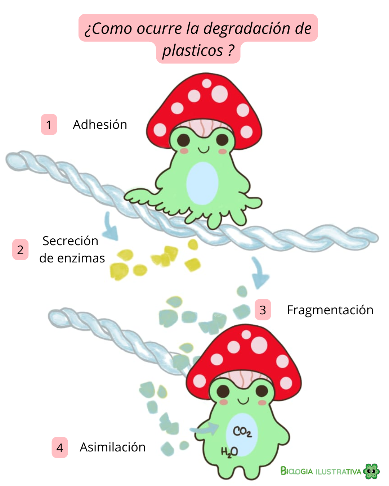

🦠 Microorganismos degradadores de plástico
Publicado el 10 de diciembre de 2025
¿Qué son los plásticos y por qué representan un reto?
De acuerdo con la literatura científica, los plásticos son polímeros sintéticos derivados del petróleo, caracterizados por su alta estabilidad química y resistencia a la degradación.
Entre los plásticos más utilizados se encuentran el polietileno (PE), polipropileno (PP), poliestireno (PS) y cloruro de polivinilo (PVC), materiales que pueden persistir en el ambiente durante décadas o incluso siglos.
Esta resistencia, que los hace tan útiles para la industria, representa al mismo tiempo uno de los mayores desafíos ambientales actuales.
🦠 ¿Quiénes son los microorganismos degradadores de plástico?
Diversos estudios han demostrado que bacterias y hongos poseen la capacidad de interactuar con ciertos polímeros plásticos y utilizarlos, total o parcialmente, como fuente de carbono y energía. No se trata de un grupo homogéneo, sino de microorganismos con estrategias metabólicas distintas y niveles de eficiencia variables.
🔬 Bacterias
Uno de los casos más conocidos es Ideonella sakaiensis, una bacteria aislada a partir de residuos de PET en una planta de reciclaje. Yoshida et al. (2016) demostraron que esta especie puede degradar polietileno tereftalato (PET) mediante la acción de dos enzimas específicas: PETasa y MHETasa, las cuales fragmentan el polímero en compuestos más simples que pueden ser asimilados por la célula.
Otros géneros bacterianos como Pseudomonas y Bacillus han sido reportados con capacidad para modificar plásticos como el PE y el PP, principalmente a través de procesos de oxidación superficial y producción de enzimas hidrolíticas (Urbanek et al., 2018).
🍄 Hongos
Los hongos representan un grupo de gran interés debido a su elevada capacidad para producir enzimas extracelulares oxidativas, como lacasas, peroxidasas y esterasas, lo que les permite atacar polímeros altamente resistentes.
Un estudio clave es el de Russell et al. (2011), quienes demostraron que Pestalotiopsis microspora, un hongo endófito aislado de la Amazonía, es capaz de degradar poliuretano incluso en condiciones anaerobias, ampliando el rango de ambientes donde este proceso puede ocurrir.
Por otro lado, Parengyodontium album, un hongo marino, ha sido identificado como capaz de degradar polietileno en presencia de radiación UV, lo que sugiere una interacción entre factores físicos y biológicos en el proceso de biodegradación (Paço et al., 2017).
No obstante, es importante resaltar que los hongos presentan tiempos de crecimiento más largos en comparación con las bacterias, lo que puede limitar su aplicación directa a gran escala, aunque no reduce su valor científico ni biotecnológico.
⚙️ ¿Cómo lo hacen?
Mecanismos de biodegradación del plástico
La biodegradación del plástico por microorganismos es un proceso complejo y lento, que depende del tipo de polímero, las condiciones ambientales y la capacidad metabólica del organismo involucrado.
De manera general, este proceso ocurre en varias etapas:
- Adhesión al plástico
El primer paso consiste en la adhesión del microorganismo a la superficie del plástico. Dado que muchos plásticos son hidrofóbicos y químicamente inertes, esta etapa representa una de las principales limitaciones del proceso.
Bacterias y hongos pueden formar biopelículas, estructuras que facilitan el contacto prolongado con el polímero. - Secreción de enzimas extracelulares
Una vez adheridos, los microorganismos producen enzimas extracelulares, que actúan fuera de la célula rompiendo las largas cadenas poliméricas.
Entre las enzimas más estudiadas se encuentran:
• Lacasas
• Peroxidasas
• Esterasas
• Cutinasas
Estas enzimas oxidan o hidrolizan enlaces específicos del polímero, debilitando su estructura. - Fragmentación del polímero
La acción enzimática genera oligómeros y monómeros, fragmentos más pequeños que pueden ser transportados al interior de la célula. Este paso es crucial, ya que los polímeros intactos no pueden atravesar la membrana celular. - Asimilación y metabolismo
Los fragmentos generados ingresan a rutas metabólicas centrales como:
• el ciclo de Krebs
• la β-oxidación (en algunos casos)
• rutas de metabolismo de compuestos aromáticos
A través de estos procesos, el carbono presente en el plástico puede ser utilizado como fuente de energía o para la formación de biomasa.

🔬 Bioprospección microbiana y oportunidades biotecnológicas
Pese a estos avances, sabemos que los tiempos de degradación siguen siendo largos, especialmente en el caso de los hongos, cuyo tiempo de generación es mayor en comparación con las bacterias.
Este aspecto ha impulsado el desarrollo de procesos de bioprospección microbiana, cuyo objetivo es identificar nuevas especies bacterianas y fúngicas con mayor eficiencia degradadora, principalmente en ambientes extremos o altamente contaminados, como rellenos sanitarios, suelos industriales y ecosistemas marinos.
Desde una perspectiva biotecnológica, el mayor potencial no radica necesariamente en liberar estos microorganismos al ambiente, sino en:
- el uso de enzimas extracelulares aisladas,
- su optimización mediante ingeniería genética,
- y la integración de procesos biológicos con métodos físicos y químicos.
Este enfoque permite reducir riesgos ecológicos y aumentar la viabilidad de aplicaciones industriales (Urbanek et al., 2018).
Reflexión crítica personal
Aunque la biodegradación microbiana del plástico es una herramienta prometedora, la literatura científica coincide en que no puede considerarse una solución única ni inmediata al problema del plástico.
Estos procesos deben entenderse como parte de un enfoque integral que incluya la reducción en la producción de plásticos, el rediseño de materiales y cambios profundos en los modelos de consumo.
Desde mi perspectiva, el verdadero valor de estos microorganismos no está solo en "eliminar plástico", sino en lo que nos enseñan sobre la versatilidad metabólica de la vida y las posibilidades de desarrollar soluciones biotecnológicas más responsables y controladas.